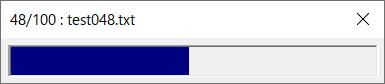

第26回.プログレスバーを自作する

VBAで時間のかかる処理の場合、ユーザーはいつ終わるか分からずただひたすら待っているしかありません。
そのような場合はVBAの進捗を画面に表示して、今なにをしているか、後どれくらいで終わるかを知らせることで、ユーザーのイライラはかなり解消されます。
ステータスバーは若干見づらいので、今回のプログレスバーは進捗をより見やすくしたものです。
今回掲載したVBAは、使い回ししやすいようにユーザーフォームだけでプログレスバーを作成しました。
ユーザーフォームの作成
フレーム：FrameProgress
また、他のコントロールの配置も自由に行って構いません。
ユーザーフォームのVBAコード
Option Explicit
Public isCancel As Boolean '中断時にTrueにする
Private pProgressBar As MSForms.Label 'ラベル：動的追加
Private pMaxValue As Long 'プログレスバー最大値
Private pBarColor As Long 'プログレスバー色
Private pCurValue As Double 'プログレスバー現在値
Private pInteractive As Long '割込み
'最大値プロパティ
Public Property Let MaxValue(aMaxValue As Long)
pMaxValue = aMaxValue
End Property
Public Property Get MaxValue() As Long
MaxValue = pMaxValue
End Property
'プログレスバー色プロパティ
Public Property Let BarColor(aBarColor As Long)
pBarColor = aBarColor
End Property
'割込み拒否プロパティ
Public Property Let Interactive(aInteractive As Boolean)
pInteractive = aInteractive
End Property
'フォーム表示入り口
Public Sub ShowModeless(Optional ByVal strTitle As String = "")
'ラベルコントロール追加
Set pProgressBar = Me.FrameProgress.Controls.Add("Forms.Label.1", "lblProgress")
If pBarColor = 0 Then pBarColor = RGB(0, 0, 128)
pProgressBar.Width = 0
pProgressBar.Height = Me.FrameProgress.Height
pProgressBar.BackColor = pBarColor
'プログレスバーの背景をへこませる
Me.FrameProgress.SpecialEffect = fmSpecialEffectSunken
'割込み拒否の設定
If pInteractive = False Then
Me.Enabled = False 'これは好みで
Application.Interactive = False
Application.EnableCancelKey = xlDisabled
End If
'フォームをモードレスで表示
Me.Caption = ""
Me.Show vbModeless 'モードレス
End Sub
'プログレス進捗：指定値
Public Sub Value(ByVal aValue As Double, Optional ByVal strTitle As String
= "")
'プログレスバー値変更
pCurValue = aValue
'最大値判定
If pCurValue > pMaxValue Then
pCurValue = pMaxValue
End If
'プログレスバーの描画
pProgressBar.Width = pCurValue * Me.FrameProgress.Width / pMaxValue
If Me.Caption <> strTitle Then
Me.Caption = strTitle
End If
'再描画
'Me.Repaint 'これだと「応答なし」が出てしまう
DoEvents
End Sub
'プログレス進捗：加算
Public Sub ValueAdd(ByVal aValue As Double, Optional ByVal strTitle As String = "")
pCurValue = pCurValue + aValue
Call Value(pCurValue, strTitle)
End Sub
'フォーム終了
Public Sub SelfClose()
Unload Me
End Sub
'正規終了以外をキャンセル
Private Sub UserForm_QueryClose(Cancel As Integer, CloseMode As Integer)
If CloseMode = vbFormControlMenu Then
If pInteractive Then
If MsgBox("処理を中断しますか?", vbYesNo, "中断確認") = vbYes Then
isCancel = True
Else
Cancel = True
End If
Else
Cancel = True
End If
End If
End Sub
'フォーム終了時に割込み拒否を戻す
Private Sub UserForm_Terminate()
If pInteractive = False Then
Application.Interactive = True
Application.EnableCancelKey = xlInterrupt
End If
End Sub
ShowModeless
UserForm_Initializeは引数を渡せないので、先々に拡張しやすいように引数を渡せるメソッドを使用しています。
プログレスバーの最大値や色はプロパティで変更できるようにしています。
Me.Repaintだけでも再描画されますが、処理時間がかかるとどうしても「応答なし」になってしまいます。
DoEventsを入れるのが一番無難ですが、処理件数が多いと余計な時間かかってしまう事にもなります。
この辺りは、いろいろと試して使いやすいように適宜変更してください。
Interactiveプロパティで制御しています。
この時に、Applicationのプロパティを元に戻しています。
また、クラスを作成してフォームを制御する方法も良いでしょう。
この辺りの詳しい話は、以下に掲載されています。
http://www.asahi-net.or.jp/~ef2o-inue/download/sub09_020.html
プログレスバーの使用方法1：中断不可
Sub sample1()
Dim Progress As New Progress
With Progress
.MaxValue = 100
.BarColor = RGB(0, 0, 128)
.Interactive = False '割込み不可
.ShowModeless "開始します"
End With
Dim i As Long, j As Long
For i = 1 To Progress.MaxValue
Progress.Value i, i & "/" & Progress.MaxValue
'いろいろ処理の代わり
For j = 1 To 10000000
Next
Next
Progress.SelfClose
End Sub
単純な使用例です。
割込みを認めないようにしています。
ユーザー操作でプログレスを閉じることは出来ません。
プログレスバーの使用方法2：中断許可
まずは、テスト用データを作成します。
Sub test()
Dim objFSO As Object
Set objFSO = CreateObject("Scripting.FileSystemObject")
Dim strFolder As String
strFolder = ThisWorkbook.Path & "\test"
objFSO.CreateFolder strFolder
Dim i As Long, j As Long
For i = 1 To 100
With objFSO.CreateTextFile(strFolder & "\test" & Format(i, "000") & ".txt")
For j = 1 To 10000
.WriteLine String(100, "A")
Next
.Close
End With
Next
End Sub
"test"フォルダを作成して、100文字10000行のデータを作成しています。
削除処理を入れていませんので、再実行するときはフォルダを削除してください。
Sub sample2()
Dim strFolder As String
strFolder = ThisWorkbook.Path & "\test"
Dim objFSO As Object
Dim maxCount As Long
Set objFSO = CreateObject("Scripting.FileSystemObject")
maxCount = objFSO.GetFolder(strFolder).Files.Count
Dim Progress As New Progress
With Progress
.MaxValue = maxCount
.Interactive = True '割込み許可
.ShowModeless "開始します"
End With
Dim objFile As Object
Dim strText As String
Dim inTs As Object
Dim i As Long, j As Long
For Each objFile In objFSO.GetFolder(strFolder).Files
If Progress.isCancel Then
MsgBox "処理が中断されました。"
Exit Sub
End If
i = i + 1
Progress.ValueAdd 1, i & "/" & maxCount & " : " & objFile.Name
Set inTs = objFile.OpenAsTextStream
strText = inTs.ReadAll
inTs.Close
'いろいろ処理
Next
Progress.SelfClose
End Sub
割込みを認めるようにしています。
中断されたときは応答で続行するか確認しています。
プログレスバー自作の最後に
処理時間が数十秒以上かかるとか、いろいろなユーザーが使うような場合は、
このようなプログレスバーを表示しておくと、ユーザーも安心すると思います。
ご自身なりに工夫して、いろいろカスタマイズして使用してみてください。
同じテーマ「ユーザーフォーム入門」の記事
第17回.Enterキーで次のコントロールに移動する
第18回.２段階のコンボボックス
第19回.数値専用のテキストボックス
第20回.テキストボックスの各種イベント
第21回.ユーザーフォームの各種イベント
第22回.コントロールの動的作成
第23回.イベントプロシージャーの共通化
第24回.イベントプロシージャーの共通化（Enter,Exit）
第25回.簡易音楽プレーヤーの作成
第26回.プログレスバーを自作する
第27回.インクリメンタルサーチの実装
新着記事NEW ・・・新着記事一覧を見る
VBA100本ノック 100本目：WEBから100本ノックのリストを取得｜VBA練習問題（3月3日）
VBA100本ノック 99本目：自動席替え（行列と前後左右が全て違うように）｜VBA練習問題（3月2日）
VBA100本ノック 98本目：席替えルールが守られているか確認｜VBA練習問題（3月1日）
VBA100本ノック 97本目：Accessデータを取得（グループ集計）｜VBA練習問題（2月27日）
VBA100本ノック 96本目：Accessデータを取得（マスタ結合&抽出）｜VBA練習問題（2月26日）
VBA100本ノック 95本目：図形のテキストを検索するフォーム作成｜VBA練習問題（2月24日）
VBA100本ノック 94本目：表範囲からHTMLのtableタグを作成｜VBA練習問題（2月23日）
VBA100本ノック 93本目：複数ブックを連結して再分割｜VBA練習問題（2月22日）
VBA100本ノック 92本目：セルの色を16進で返す関数｜VBA練習問題（2月20日）
VBA100本ノック 91本目：時間計算（残業時間の月間合計）｜VBA練習問題（2月19日）
アクセスランキング ・・・ ランキング一覧を見る
1.最終行の取得（End,Rows.Count）｜VBA入門
2.RangeとCellsの使い方｜VBA入門
3.変数宣言のDimとデータ型｜VBA入門
4.マクロって何？VBAって何？｜VBA入門
5.Range以外の指定方法（Cells,Rows,Columns）｜VBA入門
6.セルのコピー&値の貼り付け（PasteSpecial）｜VBA入門
7.繰り返し処理（For Next)｜VBA入門
8.セルに文字を入れるとは（Range,Value）｜VBA入門
9.マクロはどこに書くの（VBEの起動）｜VBA入門
10.とにかく書いてみよう（Sub,End Sub）｜VBA入門
- ホーム
- マクロVBA応用編
- ユーザーフォーム入門
- プログレスバーを自作する
このサイトがお役に立ちましたら「シェア」「Bookmark」をお願いいたします。
記述には細心の注意をしたつもりですが、
間違いやご指摘がありましたら、「お問い合わせ」からお知らせいただけると幸いです。
掲載のVBAコードは動作を保証するものではなく、あくまでVBA学習のサンプルとして掲載しています。
掲載のVBAコードは自己責任でご使用ください。万一データ破損等の損害が発生しても責任は負いません。